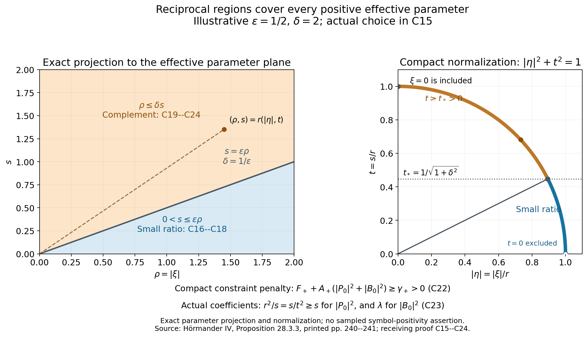
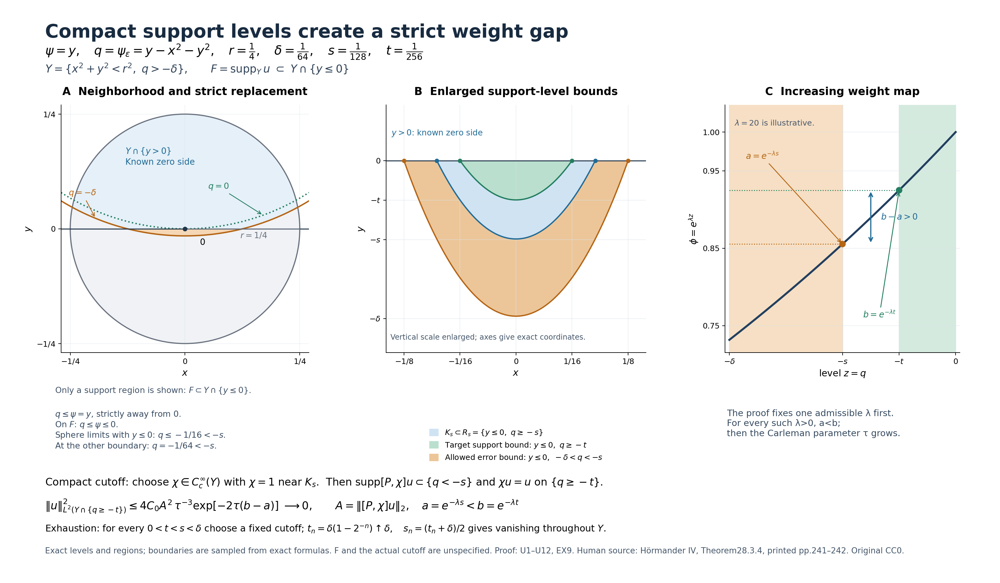
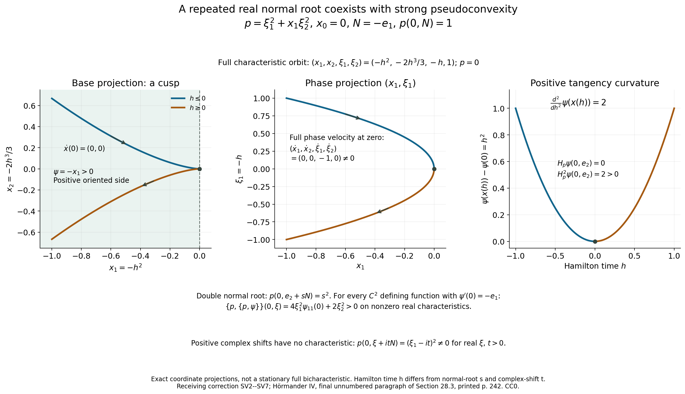

Oriented strong pseudoconvexity and weak unique continuation
A positive orientation fixes the side from which uniqueness is tested. Strong pseudoconvexity requires strict positivity on both real characteristic tangencies and complex characteristic tangencies. We first prove that these tests depend only on the oriented surface and remain stable under \(C^2\) perturbations. Exponential convexification then produces the precise Carleman symbol inequality. Its smooth principal estimate absorbs locally bounded lower terms and passes to the weak graph domain, giving one-sided uniqueness for a \(C^2\) surface and \(H^{m-1}_{\mathrm{loc}}\) solutions.
The four source statements are Definition28.3.1, Proposition28.3.2, Proposition28.3.3, and Theorem28.3.4 of [H], Section28.3. Sections15–17 separately correct the unnumbered simple-normal-root converse after the theorem: simple roots suffice, but a smooth principally normal example shows that their claimed necessity fails. This correction changes neither the hypotheses nor the conclusion of the four numbered statements.
We use the convention \(D=-i\partial\) and \(\{a,b\}=a_\xi\cdot b_x-a_x\cdot b_\xi\). A bar on a fiber polynomial conjugates its coefficients; the polynomial itself extends holomorphically to complex covectors. The principal symbol \(p\) is a complex homogeneous fiber polynomial of degree \(m\ge1\), principally normal on real cotangent space. In Sections1–9 its base coefficients need only be \(C^1\), as in Definition28.2.4. The defining functions in Sections1–3 are \(C^2\); convexification in Sections4–9 uses a smooth real weight. Smooth principal coefficients are assumed beginning in Section10 for the operator estimate (C29). The weak theorem retains locally bounded lower-order coefficients. The real Taylor comparison PN4, shifted bracket PN11, real double bracket PN12, and full receiving estimate R1–R44 are proved in General Carleman estimates and real tangent necessity. The compact principal graph approximation used below is the complete Section5.3, N8–N10 argument in Mixed Cauchy factors and admissible unique continuation. Their stated analytical hypotheses remain in force.
Access notice. Every formula is retained as source TeX, and the illustrations identify their exact coordinate projections and proof locators. The real and complex tests have different constraint sets; positivity is never extended off those sets without the finite compact penalty proved in Section6.
1. The two strict tests and positive orientation
Definition28.3.1. Let \(\psi\) be real and \(C^2\), with \(N=\psi'(x_0)\ne0\) and \(\Psi=\psi''(x_0)\). Write \(\zeta=\xi+itN\), where \(\xi\) is real and \(t>0\), and extend the fiber polynomial holomorphically. Coefficient conjugation means \(\bar p(x,\xi-itN)=\overline{p(x,\zeta)}\). The real test is
\[ \operatorname{Re}\{\bar p,\{p,\psi\}\}(x_0,\xi)>0 \quad\text{if}\quad \xi\ne0,\quad p(x_0,\xi)=p_\xi(x_0,\xi)\cdot N=0. \tag{S1} \]The complex test uses \(q_t(x,\xi)=p(x,\xi+it\psi'(x))\):
\[ \frac{\{\bar q_t,q_t\}(x_0,\xi)}{2it}>0 \quad\text{if}\quad p(x_0,\xi+itN)=p_\xi(x_0,\xi+itN)\cdot N=0, \quad t>0. \tag{S2} \]Both quantities are real. The side on which the solution vanishes is \(\{\psi>\psi(x_0)\}\). Only replacements with a positive ratio of conormals represent the same oriented test.
Suppose another real \(C^2\) function \(\phi\) represents the same local oriented surface. Translate both values at \(x_0\) to zero. In \(C^2\) coordinates \((y',s)\), with \(s=\psi\), we have \(\phi(y',0)=0\). The fundamental theorem of calculus gives \(\phi=a\psi\), with
\[ a(y',s)=\int_0^1\partial_s\phi(y',\theta s)\,d\theta, \qquad a\in C^1,\qquad a(x_0)>0. \tag{S3} \]Positivity follows from the common orientation and nonzero differentials. At the surface the \(C^2\) jets satisfy
\[ \phi'=aN,\qquad \phi''=a\Psi+da\otimes N+N\otimes da. \tag{S4} \]The Hessian formula needs no second derivative of \(a\): expand the differentiable \(a\) to first order and \(\psi\) to second order at \(x_0\) in \(a\psi\), or differentiate once and use \(\psi(x_0)=0\). For a complex vector \(v\) with \(v\cdot N=0\), the real vectors \(N\) and \(da\) give
\[ \sum_{j,k}\phi_{jk}v_j\bar v_k =a\sum_{j,k}\psi_{jk}v_j\bar v_k. \tag{S5} \]For the real test take \(v=p_\xi(x_0,\xi)\). In PN12 the other summand is linear in the conormal; (S4)–(S5) therefore multiply the whole real test by \(a\). For the complex test put \(\sigma=at\). The shifted covector for \(\phi\) is \(\xi+i\sigma N\). On the tangency set the Hessian contraction in PN11 is multiplied by \(a\), and its coefficient term satisfies \(1/t=a/\sigma\). Thus
\[ \frac{\{\overline{q_t^{\phi}},q_t^{\phi}\}}{2it}(x_0,\xi) =a\frac{\{\overline{q_\sigma^{\psi}},q_\sigma^{\psi}\}}{2i\sigma}(x_0,\xi) \quad\text{on the common characteristic tangency set}. \tag{S6} \]The characteristic and tangency equations agree because \(a>0\). This proves independence of the defining function, including complex tangency and its Hermitian Hessian contraction. The pointwise PN11 and PN12 calculations differentiate the defining function only twice and the base coefficients of \(p\) only once. Their polynomial fiber differentiations require no extra base regularity. PN4 uses compact \(C^1\) coefficient bounds and principal normality. Thus all of Sections1–3, including relative continuity and uniform stability, hold for \(C^1\) principal coefficients and \(C^2\) defining functions.
Smooth coordinate changes also preserve the definition. The induced real cotangent map preserves the canonical one-form and Poisson bracket. Its real linear fiber action maps \(\xi+it\psi'\) to the corresponding complex shifted covector. Consequently \(q_t\) is the same scalar symbol in cotangent coordinates; its bracket and the real double bracket transform by pullback. No Euclidean norm is part of (S1)–(S2). Norms used for compact normalization are equivalent on compact coordinate overlaps. This proves the coordinate and manifold variants.
2. A continuous compact constraint function
For a real symmetric \(\Psi\), a base point \(x\), real \(\xi\), nonnegative \(t\), and nonzero real \(N\), impose
\[ p(x,\xi+itN)=0,\qquad p_\xi(x,\xi+itN)\cdot N=0,\qquad |\xi|^2+t^2=1. \tag{S7} \]These equations define a closed constraint set \(M\) in the region \(N\ne0\). Define on \(M\)
\[ F(\Psi,x,\xi,t,N)= \begin{cases} \displaystyle\sum_{j,k}\Psi_{jk}p^{(j)}(x,\zeta) \overline{p^{(k)}(x,\zeta)} +\displaystyle\frac1t\operatorname{Im}\sum_j p_{(j)}(x,\zeta)\overline{p^{(j)}(x,\zeta)},&t>0,\\[3pt] \displaystyle\sum_{j,k}\Psi_{jk}p^{(j)}(x,\xi) \overline{p^{(k)}(x,\xi)} +\displaystyle\operatorname{Re}\sum_kN_k\{\bar p,p^{(k)}\}(x,\xi),&t=0, \end{cases} \quad\zeta=\xi+itN. \tag{S8} \]The two symbol constraints in (S7) remove exactly the two potentially singular errors in PN4. On a compact \(x\) neighborhood, with \(\Psi,N\) in bounded neighborhoods and \(|N|\) bounded away from zero, PN4 bounds the remaining coefficient-term error by \(Ct|N|^2|\zeta|^{2m-3}\) for \(m\ge2\). Every factor except \(t\) is uniformly bounded: \(|\zeta|^2=|\xi|^2+t^2|N|^2\) lies in a fixed interval with a positive lower endpoint on (S7). For \(m=1\) the Taylor error vanishes. The Hessian term in (S8) is continuous without a quotient. Thus \(F\) is continuous relative to \(M\), including \(t=0\), uniformly on these compact neighborhoods. This argument neither divides a small nonzero characteristic value by \(t\) nor extends positivity away from the exact constraints without justification.
At \((\Psi,N)=(\psi''(x_0),\psi'(x_0))\), the slice of \(M\) with \(x=x_0\) is compact. Equation (S1) and PN12 give \(F>0\) on its \(t=0\) points; (S2) and PN11 give \(F>0\) on its \(t>0\) points. Conversely these conditions imply (S1)–(S2) by positive homogeneous rescaling of \((\xi,t)\). In the real case \(\xi\ne0\); in a complex test \(t>0\). Hence the pair to be normalized is never zero. On the unnormalized characteristic and tangency constraints, \(F\) scales by \(r^{2m-2}\) under \((\xi,t)\mapsto r(\xi,t)\). Its strict sign therefore survives the normalization, also for \(m=1\).
3. Uniform stability under C² perturbations
Proposition28.3.2. If the compact slice is nonempty, let \(\kappa\) be its positive minimum. Relative continuity and compactness give neighborhoods of \(x_0\), \(\Psi_0=\psi''(x_0)\), and \(N_0=\psi'(x_0)\) such that
\[ F(\Psi,x,\xi,t,N)>\kappa/2 \quad\text{at every point of M in these neighborhoods}. \tag{S9} \]To prove the uniform assertion explicitly, failure would produce constraint points with \(x\to x_0\), \(\Psi\to\Psi_0\), \(N\to N_0\), and \(F\le\kappa/2\). The normalized pairs have a convergent subsequence. Closedness of the constraints gives a point in the original slice, and relative continuity contradicts its lower bound \(\kappa\). If the original slice is empty, the same compact subsequence argument shows that every sufficiently close slice is empty. The tests then hold vacuously; no positive minimum on an empty set is used.
Shrink \(U\) so that \(\psi'(x),\psi''(x)\) stay sufficiently close to \(N_0,\Psi_0\) throughout \(U\), and \(\psi'\) stays nonzero there. Choose \(\varepsilon>0\) so small that every real \(\phi\in C^2(U)\) satisfying \(|D^\alpha(\phi-\psi)|<\varepsilon\) for \(|\alpha|\le2\) has \(\phi'(x),\phi''(x)\) in the required neighborhoods for every \(x\in U\). Entrywise and Euclidean bounds differ by finite constants depending only on the dimension \(n\); choose \(\varepsilon\) using those constants. Apply (S9), or the empty-slice alternative, at each \(x\), with \(N=\phi'(x)\) and \(\Psi=\phi''(x)\). The normalized equivalence proves that every oriented level surface of \(\phi\) is strongly pseudoconvex at every point of \(U\). This is the complete stability proposition, with \(C^2\) regularity and every real and complex test retained.
4. Exponential convexification and uniform compact data
Proposition28.3.3. Let \(X\subset\mathbb R^n\) be open, let \(m\ge1\), and let \(p(x,\zeta)\) be a complex homogeneous fiber polynomial of degree \(m\), with \(C^1\) base coefficients. Assume principal normality on real cotangent space:
\[ |\{\bar p,p\}(x,\xi)|\le C_L|p(x,\xi)|\,|\xi|^{m-1}, \qquad x\in L,\quad\xi\in\mathbb R^n, \tag{C1} \]The bound holds for every compact \(L\subset X\). For \(m=1\) the last factor is \(1\). Our convention is \(\{a,b\}=a_\xi\cdot b_x-a_x\cdot b_\xi\), and a bar conjugates the coefficients of \(p\). Let \(\psi\) be real and smooth, with strongly pseudoconvex oriented levels at every point of \(X\) in the sense of (S1)–(S2). Thus \(N=\psi'\) is nowhere zero. Exponentiation preserves the positive side \(\{\psi>\psi(x_0)\}\).
For every \(Y\Subset X\), there is a \(\lambda_0>0\) such that, after fixing any \(\lambda\ge\lambda_0\), finite constants \(K_\lambda>0\) and \(\tau_{0,\lambda}\) make \(\phi=e^{\lambda\psi}\) satisfy the exact full-phase hypothesis
\[ \sum_{|\alpha|<m}\tau^{2(m-|\alpha|)-1} |(\xi+i\tau\phi'(x))^\alpha|^2 \le K_\lambda\left( |p(x,\xi+i\tau\phi'(x))|^2+ \frac{\{\overline{q_\tau},q_\tau\}(x,\xi)}{2i}\right), \quad q_\tau(x,\xi)=p(x,\xi+i\tau\phi'(x)), \tag{C2} \]This holds for every real \(\xi\), every \(x\in Y\), and every \(\tau>\tau_{0,\lambda}\). Constants may depend on the fixed \(\lambda\); no uniformity as \(\lambda\to\infty\) is asserted. Every \(K\ge K_\lambda\) also works. Here \(p\) is the pointwise principal polynomial with \(C^1\) base coefficients, and our differential convention is \(D=-i\partial\). This symbol conclusion requires no higher base regularity. The operator estimate in Section10 additionally assumes smooth principal coefficients. Lower-order coefficients of a different full operator are not added to \(p\) in this proposition.
If \(Y\) is empty, the inequalities are vacuous. Otherwise choose an open \(Z\) with \(\overline Y\subset Z\) and \(\overline Z\subset X\), and set \(L=\overline Z\). Proving the symbol estimate on \(L\) allows the norm conclusion for all compact tests in \(Y\). All following constants are uniform on this one nonempty compact set. The required derivatives of \(p,\psi\) have finite bounds there, principal normality has its compact constant \(C_L\), and
\[ 0<N_-\le |N(x)|\le N_+<\infty, \qquad \Psi(x)=\psi''(x),\qquad x\in L. \tag{C3} \]5. The exact shifted bracket and effective parameter
For \(\lambda>0\) and \(\tau>0\), put
\[ \phi=e^{\lambda\psi},\qquad a(x)=\lambda e^{\lambda\psi(x)},\qquad s=\tau a(x)>0,\qquad \zeta=\xi+isN(x),\qquad \beta(x,\xi,s)=p_\xi(x,\zeta)\cdot N(x). \tag{C4} \]For fixed \(\tau\), the effective parameter \(s\) depends on \(x\); this dependence must be differentiated. Define the real functions
\[ \begin{split} H(x,\xi,s)&=\sum_{j,k}\Psi_{jk}(x) p^{(j)}(x,\zeta)\overline{p^{(k)}(x,\zeta)},\\ L_p(x,\xi,s)&=\operatorname{Im}\sum_j p_{(j)}(x,\zeta)\overline{p^{(j)}(x,\zeta)},\\ F(x,\xi,s)&=H(x,\xi,s)+s^{-1}L_p(x,\xi,s). \end{split} \tag{C5} \]The function \(H\) is real because \(\Psi\) is real symmetric. The coefficient derivatives \(p_{(j)}\) differentiate \(p\) at a fixed fiber coordinate. Since
\[ \partial_{x_j}(sN_k)=s(\Psi_{jk}+\lambda N_jN_k),\qquad \phi''=a(\Psi+\lambda N\otimes N), \tag{C6} \]the exact PN11 identity, including coefficient derivatives and derivatives of the shifted covector, gives
\[ \frac{\{\overline{q_\tau},q_\tau\}}{2i} =s\bigl(H+\lambda|\beta|^2\bigr)+L_p =s\bigl(F+\lambda|\beta|^2\bigr). \tag{C7} \]For example, \(q_{\tau,x_j}=p_{(j)}+is\sum_k p^{(k)}(\Psi_{jk}+\lambda N_jN_k)\). The conjugate derivative has the opposite imaginary sign. The rank-one Hessian contraction is exactly \(\lambda|p_\xi(\zeta)\cdot N|^2\), with its complex conjugation retained. Thus the required uniform estimate in the effective variables is
\[ \frac{|p(x,\zeta)|^2}{s}+\lambda|\beta|^2+F(x,\xi,s) \ge c_* (|\xi|^2+s^2)^{m-1} \tag{C8} \]We seek positive \(c_*,\lambda_0,S_0\), independent of \(\lambda,s,\xi,x\) on \(L\), for which this holds whenever \(\lambda\ge\lambda_0\) and \(s\ge S_0\). Multiplication by \(s\) gives precisely the half-bracket expression in (C2).
6. A finite penalty for positivity on compact constraints
We use the following elementary compactness statement twice. Let \(\Omega\) be compact, let \(F_0\) be real and continuous, and let \(h\ge0\) be continuous. If \(F_0>0\) where \(h=0\), then some \(\gamma>0\) and \(A\ge0\) satisfy
\[ F_0+A h\ge\gamma\quad\hbox{on }\Omega. \tag{C9} \]Here are complete finite choices. If \(\Omega\) is empty, take \(\gamma=1,A=0\). Otherwise, if the zero set of \(h\) is nonempty, let \(\kappa\) be the positive minimum of \(F_0\) there, set \(\gamma=\kappa/4\), and put \(U=\{F_0>\kappa/2\}\). Let \(M=\max_\Omega\max(0,-F_0)\). If \(\Omega\setminus U\) is nonempty, it is compact and contains no zero of \(h\). Let \(\eta=\min_{\Omega\setminus U}h>0\) and take \(A=(\gamma+M)/\eta\). On this complement, \(F_0+Ah\ge-M+\gamma+M=\gamma\); on \(U\), \(F_0>2\gamma\) and \(Ah\ge0\). If the complement is empty, take \(A=0\). If the original zero set is empty, take \(\gamma=1\), \(\eta=\min_\Omega h>0\), and \(A=(1+M)/\eta\). This proves (C9), including both distinct empty-set cases, without taking a positive minimum on an empty constraint set.
7. Real tangencies and the small-ratio region
For real \(\xi\ne0\), put \(\rho=|\xi|\) and define
\[ A_0(x,\xi)=H(x,\xi,0)+ \operatorname{Re}\sum_k N_k(x)\{\bar p,p^{(k)}\}(x,\xi). \tag{C10} \]The value \(H(x,\xi,0)\) is its polynomial value and involves no quotient. By PN12, \(A_0\) is the real double bracket in (S1). On the compact set \(L\times\{|\omega|=1\}\), (S1) gives \(A_0>0\) when \(p(x,\omega)=p_\xi(x,\omega)\cdot N=0\). Apply (C9) with \(h=|p(x,\omega)|+|p_\xi(x,\omega)\cdot N|\). Write its positive constant as \(2c\), with \(c>0\), and its finite coefficient as \(C_R\ge0\). Homogeneity then gives, for every \(\rho>0\),
\[ 2c\rho^{2m-2}\le A_0(x,\xi) +C_R|p(x,\xi)|\rho^{m-2} +C_R|p_\xi(x,\xi)\cdot N|\rho^{m-1}. \tag{C11} \]For \(m=1\), the factor \(\rho^{m-2}=\rho^{-1}\) is used only for \(\rho>0\). The underlying inequality is on the unit sphere and has no singular evaluation. If the real constraint set is empty, Section6 gives exactly the same inequality.
Temporarily assume \(0<s\le\rho\). Put \(B=(1+N_+^2)^{1/2}\), so \(\rho\le|\zeta|\le B\rho\). The fiber Taylor formula along \(\xi+i\theta sN\), together with the compact coefficient bounds, gives finite \(C_H,C_P,C_\beta\), independent of \(s,\rho,x\), such that
\[ \begin{split} |H(x,\xi,s)-H(x,\xi,0)|&\le C_Hs\rho^{2m-3},\\ |p(x,\zeta)-p(x,\xi)|&\le C_Ps\rho^{m-1},\\ |\beta(x,\xi,s)-p_\xi(x,\xi)\cdot N|&\le C_\beta s\rho^{m-2}. \end{split} \tag{C12} \]For \(m=1\) the first and third differences vanish exactly, so take \(C_H=C_\beta=0\). Their bounds require neither a negative-degree polynomial nor evaluation at zero. For \(m\ge2\), the fiber degrees of \(H\) and \(\beta\) are \(2m-2\) and \(m-1\); their first shift derivatives have precisely the displayed powers. The second bound is valid for every \(m\ge1\).
Use PN4 with parameter \(s\) and normal \(N(x)\), and write its finite compact constant as \(C_T\). Its first remainder is omitted for \(m=1\). Combine this with (C11)–(C12), using \(s\le\rho\) to obtain \(|p(\zeta)|\rho^{m-2}\le |p(\zeta)|\rho^{m-1}/s\):
\[ 2c\rho^{2m-2}\le F(x,\xi,s) +D\left(\frac{|p(x,\zeta)|}{s}+|\beta|\right)\rho^{m-1} +E s\rho^{2m-3}, \tag{C13} \]One may take
\[ \begin{split} D&=C_R+C_T B^{m-1},\\ E&=C_H+C_R(C_P+C_\beta)+C_TN_+^2B^{2m-3}\quad(m\ge2),\\ E&=C_R C_P\quad(m=1). \end{split} \tag{C14} \]All these constants precede the choice of \(\lambda\). Equation (C13) uses the full PN4 error \(|p(\zeta)|/s\) away from exact characteristics and retains the tangency error \(\beta\). It does not extend the constraint-only limiting function across \(s=0\) off its constraints.
Choose once
\[ \varepsilon=\min\left(\frac12,\frac{c}{E+1}\right)>0, \qquad \delta=\varepsilon^{-1},\qquad c_{\rm sm}=c\,2^{1-m}>0. \tag{C15} \]In the region \(s\le\varepsilon\rho\), the last term of (C13) is at most \(c\rho^{2m-2}\). Put \(r=(\rho^2+s^2)^{1/2}\). Then \(\rho^{2m-2}\ge2^{1-m}r^{2m-2}\), and \(m-1\ge0\), so (C13) implies
\[ c_{\rm sm}r^{2m-2} \le F+D\left(\frac{|p(x,\zeta)|}{s}+|\beta|\right)r^{m-1}. \tag{C16} \]The two exact square estimates
\[ \begin{split} D\frac{|p(x,\zeta)|}{s}r^{m-1} &\le\frac{|p(x,\zeta)|^2}{s}+ \frac{D^2}{4s}r^{2m-2},\\ D|\beta|r^{m-1} &\le\lambda|\beta|^2+ \frac{D^2}{4\lambda}r^{2m-2} \end{split} \tag{C17} \]follow by completing squares. Consequently, if
\[ \lambda\ge L_{\rm sm}:=\max(1,D^2/c_{\rm sm}),\qquad s\ge S_{\rm sm}:=\max(1,D^2/c_{\rm sm}), \tag{C18} \]the two error coefficients sum to at most \(c_{\rm sm}/2\), and (C8) holds in this region with \(c_*=c_{\rm sm}/2\). For \(m=1\), \(r^{2m-2}=1\); this argument uses neither a positive homogeneity degree nor \(\xi=0\).
8. The complementary normalized region
Every pair with \(s>0\) lies in the previous region or in \(\rho\le\delta s\), because \(\delta=\varepsilon^{-1}\). The thresholds are reciprocal, not equal. Normalize the complementary region by
\[ \eta=\xi/r,\qquad t=s/r,\qquad |\eta|^2+t^2=1,\qquad t\ge t_*=(1+\delta^2)^{-1/2}>0. \tag{C19} \]Let \(\Omega_+\) be the compact set of \((x,\eta,t)\) satisfying these conditions with \(x\in L\). Define the normalized quantities
\[ P_0=p(x,\eta+itN),\qquad B_0=p_\xi(x,\eta+itN)\cdot N, \qquad F_+=H(x,\eta,t)+L_p(x,\eta,t)/t. \tag{C20} \]They are continuous on all of \(\Omega_+\): \(t\) is bounded away from zero, and \(|\eta+itN|^2=|\eta|^2+t^2|N|^2\) has a positive lower bound by (C3). If \(P_0=B_0=0\), the exact complex test (S2) and PN11 for \(\psi\) give
\[ F_+=\frac{\{\overline{q_t^\psi},q_t^\psi\}}{2it}>0, \qquad q_t^\psi(x,\eta)=p(x,\eta+it\psi'(x)). \tag{C21} \]The points \(\eta=0,t=1\) are included. The complex definition does not require a nonzero real part of the shifted covector. Its relevant hypothesis is the positive normalized parameter \(t\).
Apply (C9) on \(\Omega_+\) with \(h=|P_0|^2+|B_0|^2\). It supplies finite \(\gamma_+>0\) and \(A_+\ge0\) with
\[ F_++A_+\bigl(|P_0|^2+|B_0|^2\bigr)\ge\gamma_+. \tag{C22} \]The finite minimum and complement-denominator choices in Section6 provide the quantitative bound away from the constraints. If the common complex constraint set is empty, the positive minimum of \(h\) gives the same result. Hence the argument treats near-constraint points and all points away from the constraints uniformly; no pointwise large-frequency assertion replaces this compact argument.
Homogeneity, with \(x\) and its \(N,\Psi\) fixed, gives the exact identity
\[ \begin{split} &r^{2-2m}\left(\frac{|p(x,\zeta)|^2}{s} +\lambda|\beta|^2+F(x,\xi,s)\right)\\ &\hspace{18mm}=\frac{r^2}{s}|P_0|^2+\lambda|B_0|^2+F_+, \qquad \frac{r^2}{s}=\frac{s}{t^2}\ge s. \end{split} \tag{C23} \]If \(\lambda\ge A_+\) and \(s\ge A_+\), both penalty coefficients in (C23) dominate \(A_+\). Equation (C22) therefore proves (C8) here with \(c_*=\gamma_+\). This is a uniform finite-scale argument. The symbol-square coefficient \(r^2/s\) supplies coercivity away from characteristics, while the chosen convexification coefficient \(\lambda\) controls failure of tangency. For \(m=1\), all powers \(r^{2m-2}\) equal \(1\), and the identity is unchanged.
Combining the two regions, take
\[ \lambda_0=\max(L_{\rm sm},A_++1),\qquad S_0=\max(S_{\rm sm},A_++1),\qquad c_*=\min(c_{\rm sm}/2,\gamma_+)>0. \tag{C24} \]These constants depend only on the compact data and \(\varepsilon\), which was chosen independently of \(\lambda,s\). Equation (C8) now holds for every \(x\in L\), every real \(\xi\), every \(\lambda\ge\lambda_0\), and every \(s\ge S_0\). At \(\xi=0\), only the complementary argument is used, so there is no division by \(\rho\). Also \(\zeta\ne0\) when \(s>0\), because \(N\ne0\) and \(\xi\) is real.

Figure1. Exact projection to \((\rho,s)=(|\xi|,s)\) and radial normalization \((\rho/r,s/r)\) in (C15) and (C19). The pictured \(\varepsilon=1/2\) and \(\delta=2\) illustrate reciprocal thresholds; the admissible \(\varepsilon\) for a symbol is chosen by (C15). The regions cover every \(s>0\), including \(\rho=0\). The complementary arc has \(t\ge1/\sqrt5\) in the pictured example. The compact penalty (C22) and exact coefficients (C23) explain the reduction; the picture does not numerically verify symbol positivity. Proof locators: (C15)–(C24). Human source: [H], Proposition28.3.3, printed pp.240–241. Reproducible source. Original figure and source: public domain, CC0.
9. Return to the exact source monomial norm
Fix \(\lambda\ge\lambda_0\). On \(L\), set
\[ a_-=\min_{x\in L}\lambda e^{\lambda\psi(x)}>0,\qquad B_N=\max(1,N_+),\qquad D_\lambda=\sum_{k=0}^{m-1}a_-^{-[2(m-k)-1]}B_N^{2k}. \tag{C25} \]For complex \(\zeta\), the multinomial expansion has coefficients at least one, so \(\sum_{|\alpha|=k}|\zeta^\alpha|^2\le|\zeta|^{2k}\), including \(k=0\). Since \(\tau=s/a(x)\le s/a_-\), \(|\zeta|\le B_Nr\), and \(s\le r\), every positive odd parameter exponent gives
\[ \begin{split} f_\tau(x,\xi) &=\sum_{|\alpha|<m}\tau^{2(m-|\alpha|)-1}|\zeta^\alpha|^2\\ &\le\sum_{k=0}^{m-1}a_-^{-[2(m-k)-1]} B_N^{2k}s^{2(m-k)-1}r^{2k}\\ &\le D_\lambda s r^{2m-2}. \end{split} \tag{C26} \]The exact monomial sum is retained, including the lower derivative terms. Constants in this step may depend on the fixed \(\lambda\) and the finite oscillation and extrema of \(\psi\) on \(L\). Negative values of \(\psi\) cause no problem: \(a_->0\).
By (C7)–(C8), for \(s\ge S_0\),
\[ |p(x,\zeta)|^2+ \frac{\{\overline{q_\tau},q_\tau\}}{2i} \ge c_*s r^{2m-2}. \tag{C27} \]Choose
\[ K_\lambda=\max(1,D_\lambda/c_*),\qquad \tau_{0,\lambda}=\max(1,S_0/a_-). \tag{C28} \]If \(\tau>\tau_{0,\lambda}\), then \(s=\tau a(x)>S_0\) uniformly on \(L\). Equations (C26)–(C28) prove (C2) on all of \(L\), and hence on the open domain \(Z\). This completes exponential convexification for Proposition28.3.3, retaining the factor \(1/(2i)\), the actual shifted bracket, every derivative monomial, every real covector, and both normalized regions.
10. The smooth principal differential operator estimate
For the operator estimate, now assume additionally that the principal coefficients are smooth, and set \(P_m=p(x,D)\), with all lower coefficients zero. The symbol inequality (C2) on \(Z\) was proved with \(C^1\) principal coefficients: (C1)–(C28) use only one base derivative of \(p\) and polynomial fiber derivatives. Apply R1–R44 of General Carleman estimates and real tangent necessity on \(Z\), with its full polynomial equal to this homogeneous \(p\) and the fixed smooth real \(\phi\). Its hypothesis is (C2) for \(\tau>\tau_{0,\lambda}\), already proved on \(Z\). For the prescribed \(Y\Subset Z\), it supplies a finite \(C_{Y,\lambda}\) such that
\[ \sum_{|\alpha|<m}\tau^{2(m-|\alpha|)-1} \|e^{\tau e^{\lambda\psi}}D^\alpha u\|_2^2 \le K_\lambda\left(1+\frac{C_{Y,\lambda}}{\sqrt\tau}\right) \|e^{\tau e^{\lambda\psi}}P_m u\|_2^2, \qquad u\in C_c^\infty(Y),\quad \tau>1. \tag{C29} \]Here \(P_m=p(x,D)\) is the actual left differential operator. The receiving theorem includes every conjugation and quantization correction, the actual symmetric compression, uniform scalar positivity on its Schwartz input, and the bounded parameter interval. Thus (C29) neither quantizes only the principal function in (C27), assumes spatial compactness of a normalized Fourier input, nor discards differentiated principal coefficients. Even though the polynomial has no lower fiber degrees, its variable coefficients and differential conjugation have their full lower operator corrections. Sections12–14 add locally bounded lower-order coefficients and prove weak uniqueness.
The constants were chosen in the order: compact data; the real penalty; Taylor bounds; \(\varepsilon,\delta\); the complementary penalty; \(\lambda_0,S_0,c_*\); a fixed \(\lambda\); and then \(a_-,D_\lambda,K_\lambda,\tau_{0,\lambda}\). The split is independent of \(\lambda,s\). The proof includes \(m=1\), \(\xi=0\), empty real or complex constraint sets, negative values of \(\psi\), and the compact enlargement needed for the norm conclusion. The source's large-frequency closing step is supplied by the finite compact penalty (C22) and exact scaling (C23).
11. The weak theorem and a smooth strict support replacement
Theorem28.3.4. Let \(P\) have order \(m\ge1\) on \(X\), with a smooth principally normal homogeneous principal symbol \(p\) and locally bounded remaining coefficients. Let \(\psi\in C^2(X;\mathbb R)\), assume \(\psi'(x_0)\ne0\), and suppose its oriented level surface at \(x_0\) is strongly pseudoconvex. There is a neighborhood \(Y\) of \(x_0\) such that every \(u\in H^{m-1}_{\mathrm{loc}}(Y)\) with \(Pu=0\) in distributions and \(u=0\) on \(\{x\in Y:\psi(x)>\psi(x_0)\}\) vanishes throughout \(Y\). The construction of \(Y\) precedes the choice of \(u\).
Translate \(x_0\) to zero and subtract \(\psi(0)\). For \(\epsilon>0\), put
\[ \psi_\epsilon(x)=\psi'(0)\cdot x +\frac12x^T\psi''(0)x-\epsilon|x|^2. \tag{U1} \]Choose \(\epsilon\) so small that the polynomial's jet at zero lies in the stability neighborhood of (S9). Its gradient is exactly \(\psi'(0)\), and its Hessian differs by \(-2\epsilon I\). Shrink \(X_1\Subset X\) so that \(\psi_\epsilon\) has nonzero gradient and strongly pseudoconvex levels everywhere in \(X_1\). This uses the proved stability assertion, equivalently its uniform compact jet argument. The polynomial is smooth, so the original weight's \(C^2\) limitation is removed. Taylor's formula with continuous second derivatives gives a radius \(r>0\), with \(\overline B_r\subset X_1\), such that
\[ \psi_\epsilon(x)\le\psi(x)-\frac\epsilon2|x|^2, \qquad |x|\le r. \tag{U2} \]After shrinking \(r\), the second-order Taylor remainder is at most \(\epsilon|x|^2/2\). Set \(d=\epsilon r^2/2\), choose \(0<\delta<d\), and define once and for all
\[ Y=\{x\in B_r:\psi_\epsilon(x)>-\delta\}. \tag{U3} \]This is an open neighborhood of zero, relatively compact in \(X_1\). It depends only on the coefficients, \(\psi\), and the strict convexity neighborhoods. The construction applies to every solution on \(Y\), even when the solution is not given on the entire ball.
Let \(F\) be the relative support of \(u\) in \(Y\). Since \(u\) vanishes on the positive side, \(F\subset\{\psi\le0\}\). For every \(0<s<\delta\), the set
\[ K_s=F\cap\{\psi_\epsilon\ge-s\} \tag{U4} \]is compact inside \(Y\). A limit point in the closed ball satisfies \(\psi\le0\) and \(\psi_\epsilon\ge-s\). It cannot lie on the sphere, where (U2) would give \(\psi_\epsilon\le-d<-s\). It cannot lie on the other boundary of \(Y\), where \(\psi_\epsilon=-\delta<-s\). Thus every limit point lies in \(Y\) and belongs to \(F\) by relative closedness. Boundedness proves compactness. No extension of \(u\) across the boundary of \(Y\) is used, and the order \(\psi_\epsilon\le\psi\le0\) on \(F\) is retained.
12. Absorbing locally bounded lower coefficients
Write \(P=P_0+R\), where \(P_0\) is the left-quantized homogeneous principal polynomial and \(R\) has order at most \(m-1\), with locally bounded coefficients. For one sufficiently large fixed \(\lambda\) and the smooth weight \(\phi=e^{\lambda\psi_\epsilon}\), Section10 gives
\[ M_\tau(v):=\sum_{|\alpha|<m}\tau^{2(m-|\alpha|)-1} \|e^{\tau\phi}D^\alpha v\|_2^2 \le C_0\|e^{\tau\phi}P_0v\|_2^2, \quad v\in C_c^\infty(Y),\quad\tau\ge T_0. \tag{U5} \]Indeed \(P_0\) is a full smooth polynomial with zero lower coefficients, and convexification supplies the exact hypothesis of the full-symbol receiving estimate. The factor \(1+C/\sqrt\tau\) is bounded and absorbed into \(C_0\) for \(\tau\ge T_0\). Both \(\lambda\) and the compact neighborhood \(Y\) are fixed before \(\tau\) varies.
There is a finite \(L\), depending only on the coefficient bounds and the finite number of lower terms, such that for \(\tau\ge1\),
\[ \|e^{\tau\phi}Rv\|_2^2 \le L\sum_{|\alpha|<m}\|e^{\tau\phi}D^\alpha v\|_2^2 \le\frac L\tau M_\tau(v). \tag{U6} \]The second inequality uses the smallest odd power, \(\tau\), at \(|\alpha|=m-1\). No lower coefficient is differentiated. Since \(P_0v=Pv-Rv\), (U5) and (U6) give
\[ M_\tau(v)\le2C_0\|e^{\tau\phi}Pv\|_2^2 +\frac{2C_0L}{\tau}M_\tau(v). \tag{U7} \]For \(\tau\ge\max(1,T_0,4C_0L)\), absorption yields
\[ M_\tau(v)\le4C_0\|e^{\tau\phi}Pv\|_2^2. \tag{U8} \]This is the source Carleman estimate with every locally bounded lower term included, also for \(m=1\).
13. The exact principal graph domain
The principal graph approximation is the complete Section5.3, N8–N10 proof in Mixed Cauchy factors and admissible unique continuation. Its exact interface is this: if \(A\) is a smooth differential operator of order \(m\), a compactly supported \(v\in H^{m-1}\) with \(Av\in L^2\) has approximants \(v_j\in C_c^\infty\), supported in a common slightly larger compact neighborhood, with \(v_j\to v\) in \(H^{m-1}\) and \(Av_j\to Av\) in \(L^2\). The proof supplies the uniform \(H^{-1}\to L^2\) coefficient-convolution commutator bound, the complete finite differential commutator, and strong convergence. Its lower prerequisites remain declared.
Apply this interface to \(A=P_0\). For compactly supported \(v\in H^{m-1}(Y)\) with \(Pv\in L^2\), boundedness of \(R:H^{m-1}\to L^2\) gives \(P_0v=Pv-Rv\in L^2\). The approximants also satisfy \(Rv_j\to Rv\), hence \(Pv_j\to Pv\), in \(L^2\). For each fixed \(\tau\), the weight is bounded on the common compact support, so every norm in (U8) converges. The same estimate therefore holds on this weak graph domain. The order is to fix \(\tau\), take the graph limit, and only afterwards let \(\tau\to\infty\); no joint mollifier and parameter limit is claimed.
For \(\chi\in C_c^\infty(Y)\), the product \(v=\chi u\) belongs to this graph domain. The exact finite product identity is
\[ P(\chi u)=\chi Pu+[P,\chi]u=[P,\chi]u. \tag{U9} \]The principal commutator has order at most \(m-1\), with smooth compactly supported coefficients. Each lower commutator has order at most \(m-2\); it is a finite sum of an original bounded coefficient times a derivative of \(\chi\) times a derivative of \(u\). For \(m=1\), the order-zero lower commutator is identically zero. Thus \([P,\chi]u\in L^2\), with compact support. No rough coefficient is differentiated, and no further regularity of \(u\) is required.
14. Compact cutoffs and the positive weight gap
Fix \(0<t<s<\delta\). Since \(K_s\) is compact in \(Y\), choose \(\chi\in C_c^\infty(Y)\) equal to one near \(K_s\). Every distributional derivative of \(u\) has support in \(F\). Consequently
\[ \operatorname{supp}[P,\chi]u\subset F\cap\operatorname{supp}(d\chi\text{ and its higher derivatives}) \subset\{\psi_\epsilon<-s\}. \tag{U10} \]The last inclusion holds because \(\chi\) is identically one near every point of \(K_s\). Moreover \(\chi u=u\) wherever \(\psi_\epsilon\ge-t\): on \(F\), this region lies in \(K_s\), and outside \(F\), the solution is zero. Set \(A=\|[P,\chi]u\|_2\), which is finite and independent of \(\tau\). Monotonicity of the exponential gives the exact gap
\[ a=e^{-\lambda s}<b=e^{-\lambda t},\qquad \phi\le a\text{ on the commutator support},\qquad \phi\ge b\text{ where }\psi_\epsilon\ge-t. \tag{U11} \]Apply (U8) to \(v=\chi u\), retaining only the \(\alpha=0\) summand:
\[ \tau^{2m-1}e^{2\tau b} \|u\|_{L^2(Y\cap\{\psi_\epsilon\ge-t\})}^2 \le4C_0A^2e^{2\tau a}. \tag{U12} \]After division, the right side tends to zero because \(b-a>0\). Thus \(u=0\) on \(\{\psi_\epsilon\ge-t\}\). Every \(t\in(0,\delta)\) is permitted by choosing \(s\in(t,\delta)\). These subregions exhaust \(Y\), where \(\psi_\epsilon>-\delta\). A countable increasing sequence \(t\to\delta\) proves that \(u=0\) throughout \(Y\), as an \(L^2\) function and hence as a distribution. This completes the \(C^2\) one-sided theorem using the full smooth convexification estimate already proved in Sections4–10. The printed simple-root converse is a separate source variant, not an extra hypothesis of this theorem.

Figure2. Compact support levels create a strict weight gap. This is the exact order-two support geometry of Exercise5, (EX9), which assumes the estimate (U8). In base coordinates \((x,y)\in\mathbb R^2\), set \(\psi=y\), \(q=\psi_\epsilon=y-x^2-y^2\), \(r=1/4\), \(\delta=1/64\), \(s=1/128\), and \(t=1/256\). The positive side \(y>0\) is the known zero side. Panel A uses equal Euclidean scales and shows \(Y=\{x^2+y^2<r^2,\ q>-\delta\}\), together with the admissible region containing the unspecified relative support \(F=\operatorname{supp}_Y u\subset Y\cap\{y\le0\}\). A support limit on the sphere has \(y\le0\) and hence \(q\le-1/16<-s\); the other boundary has \(q=-1/64<-s\). Relative closedness therefore makes \(K_s=F\cap\{q\ge-s\}\) compact inside \(Y\), although \(u\) is given only on \(Y\).
Panel B explicitly enlarges the vertical scale. Its colored regions are the potential compact bound \(R_s=\{y\le0,q\ge-s\}\), potential target-support bound \(R_t=\{y\le0,q\ge-t\}\), and allowed applied-commutator strip \(E_s=\{y\le0,-\delta<q<-s\}\). They bound the respective sets; an actual solution, actual \(K_s\), and chosen cutoff are unspecified. Indeed \(x^2+y^2\le s+y\le s<r^2\) on \(R_s\), so this entire closed bounded lens lies inside \(Y\). The vertical ticks \(-\delta,-s,-t\) are coordinate values, whereas the curves are levels of \(q\). Choose \(\chi\in C_c^\infty(Y)\) equal to one near the actual \(K_s\). Then \(\operatorname{supp}([P,\chi]u)\subset F\cap\{q<-s\}\subset E_s\), and \(\chi u=u\) on \(Y\cap\{q\ge-t\}\). The support assertion concerns the applied commutator \([P,\chi]u\).
Panel C has scalar input \(z=q\) and displays the increasing map \(z\mapsto e^{\lambda z}\). Its plotted \(\lambda=20\) is illustrative. The theorem fixes a sufficiently large admissible \(\lambda\) before varying \(\tau\); Exercise5 assumes its estimate at a fixed positive \(\lambda\). The commutator weight is at most \(a=e^{-\lambda s}\), and the target weight is at least \(b=e^{-\lambda t}>a\). With \(A=\|[P,\chi]u\|_2<\infty\), the order-two estimate gives exactly \(\|u\|^2_{L^2(Y\cap\{q\ge-t\})}\le4C_0A^2\tau^{-3}e^{-2\tau(b-a)}\to0\). The principal graph limit is taken at fixed \(\tau\) first. The parameter limit then keeps \(\lambda\) and this cutoff fixed. Vanishing throughout \(Y\) uses every \(0<t<s<\delta\), with its own cutoff: \(t_n=\delta(1-2^{-n})\uparrow\delta\) and \(s_n=(t_n+\delta)/2\) give a countable exhaustion. The full proof is (U1)–(U12), with the cutoff and gap in Section14, (U10)–(U12); the concrete solution is Exercise5, (EX9). Human source: [H], Theorem28.3.4, printed pp.241–242. Reproducible source. Original figure and source: public domain, CC0.
15. The sufficient simple-root implication
Fix a nonzero real covector \(N\) at \(x_0\). Suppose \(p(x_0,N)\ne0\), and that for every real \(\xi\notin\mathbb RN\), every root of the complex normal polynomial
\[ f_\xi(s)=p(x_0,\xi+sN) \tag{SV1} \]is simple. Its degree is exactly \(m\), because its leading coefficient is \(p(x_0,N)\). Let \(\psi\) be any real \(C^2\) defining function with \(\psi'(x_0)=N\); its Hessian is unrestricted.
A real characteristic tangent to \(N\) would satisfy \(p(x_0,\xi)=p_\xi(x_0,\xi)\cdot N=0\), with \(\xi\ne0\). If \(\xi=cN\), homogeneity gives \(p(x_0,\xi)=c^mp(x_0,N)\ne0\) for \(c\ne0\). Otherwise these equations give \(f_\xi(0)=f_\xi'(0)=0\), contradicting simplicity. Thus the real test set is empty.
At a complex test point, \(\xi\) is real, \(t>0\), and \(p(x_0,\xi+itN)=p_\xi(x_0,\xi+itN)\cdot N=0\). If \(\xi=cN\), the first expression is \((c+it)^mp(x_0,N)\ne0\). Otherwise \(f_\xi(it)=f_\xi'(it)=0\), again contradicting simplicity. The complex test set is also empty. Hence both strict tests hold for every \(\psi\) with this conormal. This proves the true sufficient implication, for every complex root and including the excluded parallel-covector cases.
Noncharacteristicity is necessary if the tests must hold for every such \(\psi\). If \(p(x_0,N)=0\), then \(\zeta=iN\) is a complex characteristic at \(t=1\), and Euler's identity gives \(p_\xi(x_0,iN)\cdot N=0\). Put \(v=p_\xi(x_0,iN)\). If \(v=0\), the divided bracket in PN11 is zero for every Hessian, violating strict positivity. If \(v\ne0\), prescribe the Hessian \(-cI\). Its Hermitian term is \(-c|v|^2\), whereas the coefficient-derivative term is fixed, so large \(c\) makes the bracket negative. Every real symmetric Hessian is realized by a quadratic \(C^2\) defining function with the specified nonzero first jet. Thus the all-defining-functions assertion implies \(p(x_0,N)\ne0\). This necessity does not imply simple normal roots.
16. A repeated real root satisfying the strict tests
In two variables take
\[ P=D_1^2+x_1D_2^2,\qquad p(x,\xi)=\xi_1^2+x_1\xi_2^2,\qquad x_0=0,\qquad N=-e_1. \tag{SV2} \]This is a smooth real homogeneous degree-two symbol of a smooth differential operator. Principal normality holds with constant zero because \(\bar p=p\) on real phase space. All lower coefficients vanish. Yet
\[ p(0,N)=1,\qquad p(0,e_2+sN)=s^2, \tag{SV3} \]and \(e_2\notin\mathbb RN\). The normal polynomial therefore has a double real root.
Let \(\psi\) be any real \(C^2\) function with \(\psi'(0)=-e_1\). Expand the complete brackets before restricting to characteristics:
\[ \{p,\psi\}=2\xi_1\psi_1+2x_1\xi_2\psi_2, \qquad \{p,\{p,\psi\}\}(0,\xi) =4\xi_1^2\psi_{11}(0)+2\xi_2^2. \tag{SV4} \]At zero every nonzero real characteristic has \(\xi_1=0\), \(\xi_2\ne0\), and normal derivative \(-2\xi_1=0\). Its real test is exactly \(2\xi_2^2>0\), for every Hessian. The positive term comes from the base derivative \(p_{x_1}=\xi_2^2\); it must be retained even when the fiber gradient vanishes.
The complex characteristic equation has no allowed solution:
\[ p(0,\xi+itN)=(\xi_1-it)^2\ne0, \qquad \xi\in\mathbb R^2,\quad t>0. \tag{SV5} \]A complex square vanishes only when its factor vanishes, which is incompatible with real \(\xi_1\) and \(t>0\). Every \(\psi\) with the prescribed first jet therefore satisfies both tests. At \((0,e_2)\), the full fiber gradient vanishes, but \(p_{x_1}=1\), so \(dp\ne0\). The example respects the full real first-jet obstruction proved in the prerequisite lesson. It refutes the claimed necessity of simple real normal roots under the source's actual principal-normality assumptions.
17. The full Hamilton curve and its projections
For (SV2), Hamilton's equations are
\[ \dot x_1=2\xi_1,\quad \dot x_2=2x_1\xi_2, \quad\dot\xi_1=-\xi_2^2,\quad\dot\xi_2=0. \tag{SV6} \]The curve starting at \((0,e_2)\), with Hamilton time \(h\), is exactly
\[ x_1(h)=-h^2,\quad x_2(h)=-\frac23h^3, \quad\xi_1(h)=-h,\quad\xi_2(h)=1, \quad p(x(h),\xi(h))=0. \tag{SV7} \]Its full phase-space velocity at zero is nonzero, although its base projection has zero initial velocity. For \(\psi=-x_1\), the projected curve satisfies \(\psi(x(h))=h^2\) and \(d^2\psi/dh^2=2\). For every \(C^2\) function with the same first jet, Taylor's formula gives \(\psi(x(h))=\psi(0)+h^2+O(h^4)\), since \(|x(h)|^2=O(h^4)\). The cusp is a base projection, not a stationary full bicharacteristic. Hamilton time \(h\), the normal-root variable \(s\), and the positive Carleman parameter \(t\) have distinct roles.
The correction retains the sufficient simple-root implication, the necessary noncharacteristic normal, and this counterexample satisfying every source hypothesis. A characterization of every possible repeated-root mechanism would require additional work and is not asserted.

Figure3. The smooth real symbol \(p=\xi_1^2+x_1\xi_2^2\) has the repeated normal root \(p(0,e_2+sN)=s^2\), with \(N=-e_1\), while \(p(0,N)=1\). The left panel is only the base projection \((x_1,x_2)=(-h^2,-2h^3/3)\); its initial velocity is zero. The middle panel is only the phase projection \((x_1,\xi_1)=(-h^2,-h)\), and explicitly records the full four-coordinate curve and its nonzero velocity \((0,0,-1,0)\) at zero. The right panel is the exact value \(\psi(x(h))-\psi(0)=h^2\) for \(\psi=-x_1\), with second derivative \(2\). The shaded side \(x_1<0\) is precisely \(\psi>0\); both nonzero branches enter it. Arrows indicate increasing Hamilton time \(h\). The illustrated interval \([-1,1]\) is a coordinate illustration, not a claim about the uniqueness neighborhood. Equations (SV2)–(SV7), rather than sampled values, prove the strict real test and the empty complex test set. Human source: [H], the unnumbered paragraph on printed p.242 before Section28.4. Reproducible source. Original figure and source: public domain, CC0.
18. Six solved exercises — 50 points
Exercise 1 — a transport symbol detects orientation, 8 points.
For \(p(x,\xi)=\xi_1\) in two dimensions, let \(\psi(x)=x_2+a x_1^2/2\) and \(x_0=0\). Compute both strong pseudoconvexity tests. Determine all admissible \(a\), and compare the defining functions \(\psi\), \(-\psi\), and \(\phi=e^{\kappa\psi}-1\), where \(\kappa>0\).
Solution. The symbol is real and homogeneous of degree one, so its principal-normality bracket is zero. At zero the normal is \(N=e_2\), and \(p_\xi\cdot N=0\). Every nonzero real characteristic has \(\xi_1=0\), and direct use of the fixed Poisson convention gives
\[ \{p,\psi\}=\psi_1,\qquad \{p,\{p,\psi\}\}(0,\xi)=\psi_{11}(0)=a. \tag{EX1} \]The shifted symbol must be differentiated before setting the base point to zero:
\[ q_t(x,\xi)=\xi_1+it\psi_1(x),\qquad \{\bar q_t,q_t\}=2it\psi_{11}(x),\qquad \frac{\{\bar q_t,q_t\}}{2it}(0,\xi)=a. \tag{EX2} \]At zero the complex characteristic and tangency equations hold whenever \(\xi_1=0\), for every \(t>0\). Thus both strict tests hold exactly when \(a>0\). Replacing \(\psi\) by \(-\psi\) reverses the normal and both tested values become \(-a\). It changes the oriented positive side and is not a positive reparametrization. For \(\phi\), the normal at zero is \(\kappa e_2\), while \(\phi_{11}(0)=\kappa a\). Both tests therefore have value \(\kappa a\) on their corresponding constraints. The extra Hessian term \(\kappa^2N\otimes N\) has zero contraction with the tangent fiber vector \(e_1\). This verifies the positive orientation rule directly, including the full shifted bracket.
Exercise 2 — a finite penalty extends constraint positivity, 6 points.
On \(\Omega=[-1,1]\), take \(F(y)=1-4y^2\) and \(h(y)=y^2\). Find the least nonnegative \(A\) such that \(F+Ah\ge1/2\) everywhere. Give valid constants for the separate cases \(F=-5,h=1\) and \(\Omega=\varnothing\). Explain the relevance to C22–C23.
Solution. The exact constraint \(h=0\) consists of zero, where \(F=1\). Off that constraint \(F\) can be negative. Since
\[ F(y)+Ah(y)=1+(A-4)y^2, \tag{EX3} \]the minimum is \(A-3\) when \(0\le A\le4\), and is \(1\) when \(A\ge4\). Hence the least admissible coefficient is \(A=7/2\). Necessity follows at \(y=1\); sufficiency follows from \(1-y^2/2\ge1/2\). For \(F=-5,h=1\), the constraint set is empty and \(A=6\) gives the lower bound \(1\). For an empty ambient compact set, \(\gamma=1,A=0\) is valid because the inequality has no points to test. These are distinct empty-set cases.
In C22 the role of \(h\) is played by \(|P_0|^2+|B_0|^2\). Once the compact penalty coefficient \(A_+\) has been chosen, the actual normalized coefficients are \(r^2/s\) and \(\lambda\). The conditions \(s\ge A_+\) and \(\lambda\ge A_+\) dominate that penalty, since \(r^2/s=s/t^2\ge s\). Positivity solely on the constraint set would not justify this offconstraint conclusion without a penalty argument.
Exercise 3 — reciprocal regions and a fixed convexification parameter, 8 points.
Take an illustrative \(\varepsilon=1/4\). Determine the complementary region and its normalized lower bound on \(t=s/r\). For order \(m=2\), assume \(|N|=1\) and \(-2\le\psi\le1\) on the compact set. Fix \(\lambda>0\), write \(s=\tau\lambda e^{\lambda\psi}\), and give a sufficient uniform \(\tau\) threshold for \(s\ge S_0\). Bound the exact monomial norm by a constant times \(sr^2\).
Solution. The complement of \(s\le\varepsilon\rho\), with \(\rho=|\xi|\), is contained in \(\rho\le4s\). The reciprocal threshold is \(\delta=4\), rather than \(1/4\). For \(r=(\rho^2+s^2)^{1/2}\), this complementary region satisfies
\[ t=\frac{s}{r}\ge\frac1{\sqrt{17}}. \tag{EX4} \]Let \(a_-=\lambda e^{-2\lambda}>0\). Then \(s\ge\tau a_-\), so \(\tau\ge S_0e^{2\lambda}/\lambda\) suffices. This threshold is finite after fixing \(\lambda\); no uniform threshold as \(\lambda\to\infty\) follows from these bounds. For \(\zeta=\xi+isN\), real \(\xi,N\) and \(|N|=1\) give \(|\zeta|^2=r^2\). The exact order-two sum is
\[ f_\tau=\tau^3+\tau\sum_j|\zeta_j|^2 \le a_-^{-3}s^3+a_-^{-1}sr^2 \le(a_-^{-3}+a_-^{-1})sr^2. \tag{EX5} \]Both the zero-order and first-order monomials have been retained. The last inequality uses \(s\le r\). Negative values of \(\psi\) enlarge the fixed-\(\lambda\) constants but do not make \(a_-\) zero. This is the concrete order-two instance of C25–C28; the illustrative region threshold still has to be replaced by the actual C15 choice when proving positivity for a particular symbol.
Exercise 4 — rough lower coefficients require no differentiation, 8 points.
Suppose an order-two smooth principal operator \(P_0\) satisfies \(M_\tau(v)\le C_0\|e^{\tau\phi}P_0v\|_2^2\) for \(\tau\ge T_0\), where \(M_\tau(v)=\tau^3\|e^{\tau\phi}v\|_2^2+\tau\sum_{j=1}^2\|e^{\tau\phi}D_jv\|_2^2\). Add \(R=b_1D_1+b_2D_2+c\), with measurable coefficients bounded in absolute value by \(B\) on the common compact support. Prove an explicit estimate for \(P=P_0+R\), and compute \([R,\chi]\).
Solution. The elementary inequality \(|z_1+z_2+z_3|^2\le3\sum|z_j|^2\) gives, for \(\tau\ge1\),
\[ \|e^{\tau\phi}Rv\|_2^2 \le3B^2\left(\sum_{j=1}^2\|e^{\tau\phi}D_jv\|_2^2 +\|e^{\tau\phi}v\|_2^2\right) \le\frac{3B^2}{\tau}M_\tau(v). \tag{EX6} \]Using \(P_0v=Pv-Rv\), then moving the resulting \(6C_0B^2M_\tau(v)/\tau\) term to the left, yields
\[ M_\tau(v)\le4C_0\|e^{\tau\phi}Pv\|_2^2, \qquad\tau\ge\max(1,T_0,12C_0B^2). \tag{EX7} \]For a smooth compact cutoff,
\[ [R,\chi]v=-i\sum_{j=1}^2b_j(\partial_j\chi)v. \tag{EX8} \]Multiplication by \(c\) commutes with \(\chi\). No derivative of \(b_j\) or \(c\) occurs. For compactly supported \(v\in H^1\) with \(Pv\in L^2\), the exact smooth principal graph approximation gives convergence of \(P_0v_j\) in \(L^2\), and boundedness of \(R:H^1\to L^2\) gives convergence of \(Rv_j\). Passing to the estimate for each fixed \(\tau\) proves the same bound on that weak graph domain. The parameter limit comes after this graph limit.
Exercise 5 — a solution given only on the chosen neighborhood, 10 points.
Let \(\psi(x,y)=y\), \(\psi_\epsilon(x,y)=y-x^2-y^2\), \(r=1/4\), and \(\delta=1/64\). Put \(Y=\{x^2+y^2<r^2,\ \psi_\epsilon> -\delta\}\). Suppose a weak solution is given only on \(Y\), vanishes where \(y>0\), and has the order-two estimate U8 for the fixed weight \(\phi=e^{\lambda\psi_\epsilon}\), \(\lambda>0\). Prove compactness of \(K_s\) for \(s=1/128\). With \(t=1/256\), derive the norm bound that forces vanishing on \(\{\psi_\epsilon\ge-t\}\). Explain how to obtain vanishing on all of \(Y\).
Solution. Let \(F\) be the relative support in \(Y\). It lies in \(\{y\le0\}\). On the circle of radius \(r\), a limit of support points satisfies \(\psi_\epsilon=y-r^2\le-1/16<-s\). On the other boundary of \(Y\), \(\psi_\epsilon=-1/64<-s\). Thus the bounded relative-closed set \(K_s=F\cap\{\psi_\epsilon\ge-s\}\) has no limit on either boundary and is compact inside \(Y\). No extension of the solution to the whole ball is used. The gradient of the smooth replacement is \((-2x,1-2y)\), which is nonzero on the closed ball of radius \(1/4\).
Choose \(\chi\in C_c^\infty(Y)\) equal to one near \(K_s\). The support of \([P,\chi]u\) lies where \(\psi_\epsilon<-s\). Set \(A=\|[P,\chi]u\|_2\). The order-zero term on the left of U8 gives
\[ \|u\|_{L^2(Y\cap\{\psi_\epsilon\ge-1/256\})}^2 \le4C_0A^2\tau^{-3} \exp\!\left[-2\tau\left(e^{-\lambda/256}-e^{-\lambda/128}\right)\right]. \tag{EX9} \]The gap in parentheses is strictly positive. Letting \(\tau\to\infty\) proves vanishing on this subregion. The same argument works for every \(0<t<s<\delta\), with its own fixed compact cutoff. A countable increasing sequence \(t\to\delta\) exhausts \(Y\) and proves vanishing throughout it. A single fixed \(t\) would give only its smaller subregion; the exhaustion is part of the theorem.
Exercise 6 — a double normal root with positive tangency curvature, 10 points.
For \(p=\xi_1^2+x_1\xi_2^2\), \(x_0=0\), and \(N=-e_1\), prove that every real \(C^2\) defining function with this first jet satisfies the two strict tests at zero. Compute the normal polynomial at \(\xi=e_2\), and solve the Hamilton equations through \((0,e_2)\). Identify exactly which curve has zero initial velocity.
Solution. The symbol is smooth, real and homogeneous of degree two, and \(\{\bar p,p\}=0\). It is principally normal. Also \(p(0,N)=1\), but
\[ p(0,e_2+sN)=s^2. \tag{EX10} \]The root at zero is double. For arbitrary \(\psi''(0)\) and the prescribed \(\psi'(0)=-e_1\), the complete real double bracket at zero is
\[ \{p,\{p,\psi\}\}(0,\xi) =4\xi_1^2\psi_{11}(0)+2\xi_2^2. \tag{EX11} \]Every nonzero real characteristic has \(\xi_1=0,\xi_2\ne0\), and is normal-tangent; its tested value is therefore \(2\xi_2^2>0\), independently of the Hessian. For a real \(\xi\) and positive complex-shift parameter \(t\), the characteristic expression is \((\xi_1-it)^2\), which is never zero. The complex test set is empty. Both required tests hold for every such defining function despite the repeated real normal root.
Hamilton's equations and their exact solution, with Hamilton time \(h\), are
\[ \dot x_1=2\xi_1,\quad\dot x_2=2x_1\xi_2,\quad \dot\xi_1=-\xi_2^2,\quad\dot\xi_2=0; \qquad (x_1,x_2,\xi_1,\xi_2) =\left(-h^2,-\frac23h^3,-h,1\right). \tag{EX12} \]Substitution gives \(p=0\) for every \(h\). The base projection has velocity \((0,0)\) at zero, but the full phase curve has velocity \((0,0,-1,0)\), which is nonzero. For \(\psi=-x_1\), its value on the curve is \(h^2\), with second derivative \(2\). This matches the real test and explains the cusp in the base projection. It refutes the printed necessity of simple normal roots under the actual hypotheses. The sufficient simple-root implication in SV1 remains valid. Hamilton time \(h\), normal-root variable \(s\), and positive complex-shift parameter \(t\) have different roles.
19. Sources and scope
[H] Lars Hörmander, The Analysis of Linear Partial Differential Operators IV: Fourier Integral Operators, 2009 reprint, Springer, Section28.3, printed pp.239–242. Official publisher edition.
Definition28.3.1 begins on printed p.239. Proposition28.3.2 and Proposition28.3.3 occupy printed p.240, with convexification continuing on p.241. Theorem28.3.4 and its proof occupy pp.241–242. The simple-root paragraph on p.242 is treated separately in Sections15–17.
The arguments above preserve the positive orientation, the real and complex constraints, every odd parameter power, the fixed convexification parameter, locally bounded lower coefficients, the \(C^2\) weak theorem, and the compact cutoff exhaustion. The printed simple-root converse is corrected only within its actual hypotheses by (SV2)–(SV7); its sufficient implication remains proved in Section15.
The exact PN4, PN11, PN12, and R1–R44 interfaces are in General Carleman estimates and real tangent necessity. The weak principal graph interface is Section5.3, N8–N10 of Mixed Cauchy factors and admissible unique continuation. Their lower prerequisites remain declared. The later smooth and C² weak compact-contact conclusions at the invertible real quadratic fiber are proved in Weak convexity, one-sided approximation, and compact contact and C² surfaces and compact-contact uniqueness. The separate simple-normal-root theorem with locally Lipschitz principal coefficients is proved in Angular calculus with Lipschitz coefficients and Simple-root uniqueness with Lipschitz principal coefficients, retaining smooth real characteristic geometry and the original weak graph domain. Spot-checked in a separate AI session.
Written by GPT-6.1 Sol (OpenAI), at Ultra reasoning effort, October 2026. Self-checked by the writing AI and spot-checked in a separate AI session. Public domain (CC0).
Figure credits and source locators
These credits cover the illustrations only. They do not change the lesson’s proof status.
- effective-parameter-regions — GPT-6.1 Sol (OpenAI), Ultra reasoning effort, October2026; CC0.
- C15–C24; Hörmander IV Proposition28.3.3. Exact reciprocal regions and compact normalization; illustrative epsilon1/2 is distinguished from an admissible symbol threshold.
- Reproducible source: figures/effective_parameter_regions.py
Figure SHA-256:
4A04EFBFE1982D54C47DD846C86A59696E03C710DE2B47002C985481EBA2EC8A - convexity-gap047 — GPT-6.1 Sol (OpenAI), Ultra reasoning effort, October2026; CC0.
- U1–U12,EX9; Hörmander IV Theorem28.3.4. Exact relative support-region bounds and cutoff weight gap; support and cutoff unspecified; lambda20 illustrative.
- Reproducible source: figures/convexity_gap047.py
Figure SHA-256:
25A843D12D56459F0558C1B76033D81F3297F9F1614C17E154B16FB2DE1A4222 - double-root-hamilton-projection — GPT-6.1 Sol (OpenAI), Ultra reasoning effort, October2026; CC0.
- SV2–SV7,EX10–EX12; Hörmander IV unnumbered simple-root paragraph. Exact base and phase projections, full four-coordinate Hamilton curve and nonzero full velocity.
- Reproducible source: figures/double_root_hamilton_projection.py
Figure SHA-256:
762ECFDAA78B520311452BE2E45F88369539808BAB59C5617B895194C7ABBA8F